Stata in the style of Picasso's "Dora Maar" and Van Gogh's "The Starry Night"
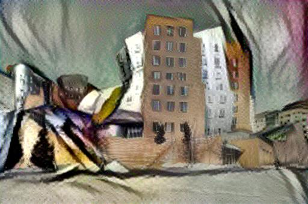
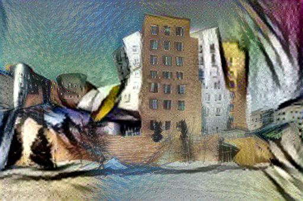
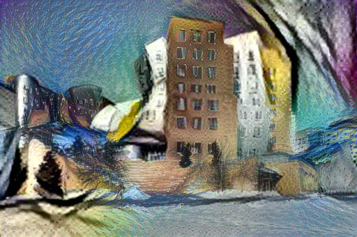
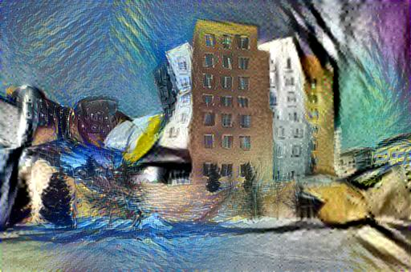
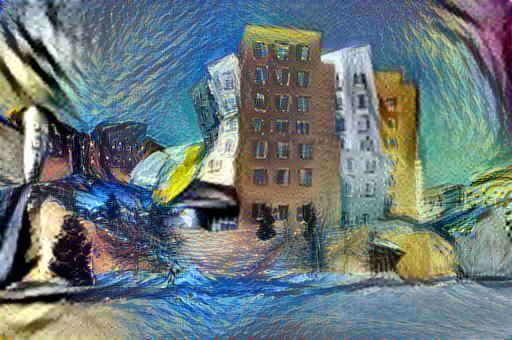
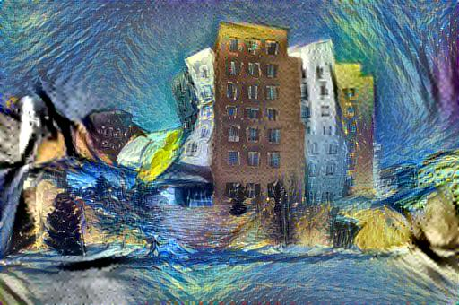
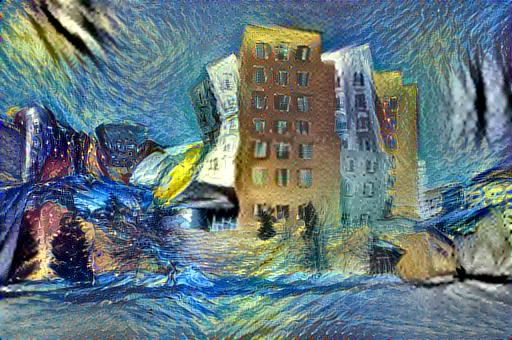
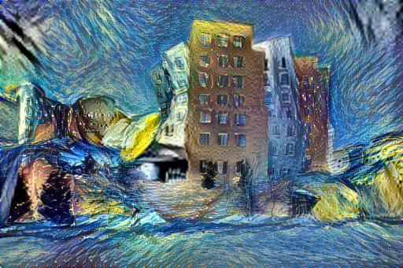
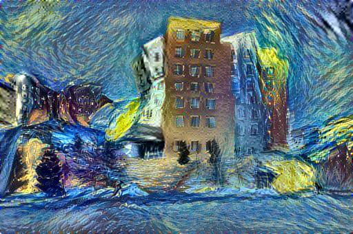
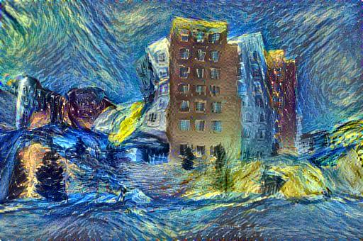
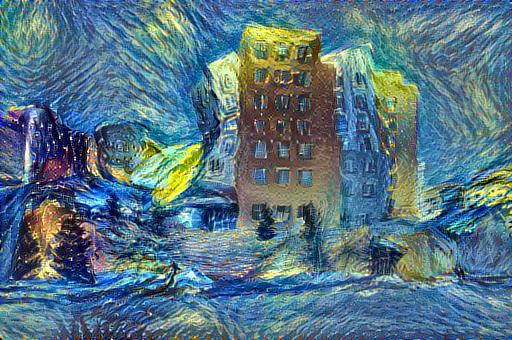
Slide to change the style blend weights used to generate the image.
Marilyn Monroe in the style of Picasso's The Dream
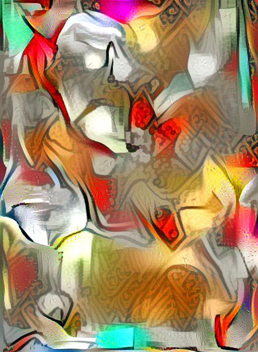
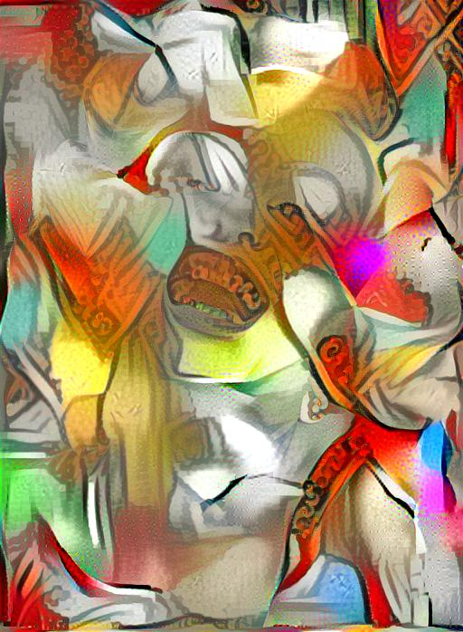
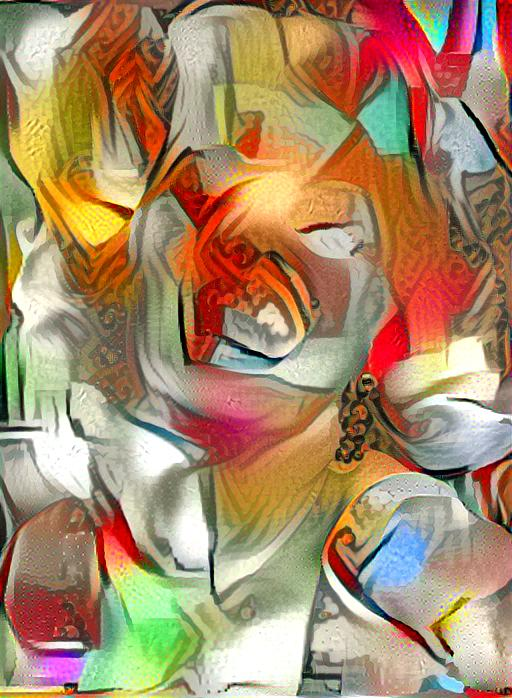
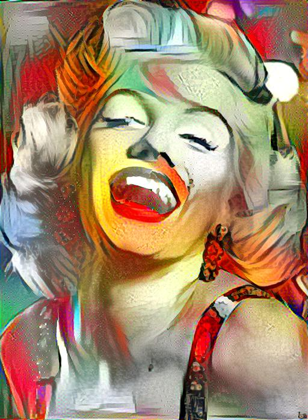
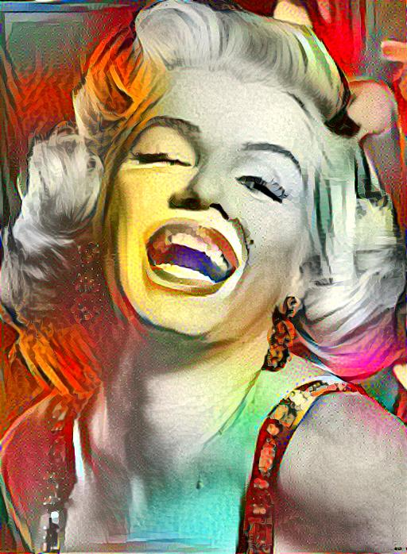
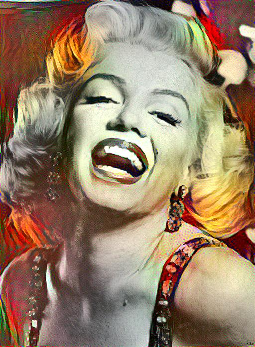
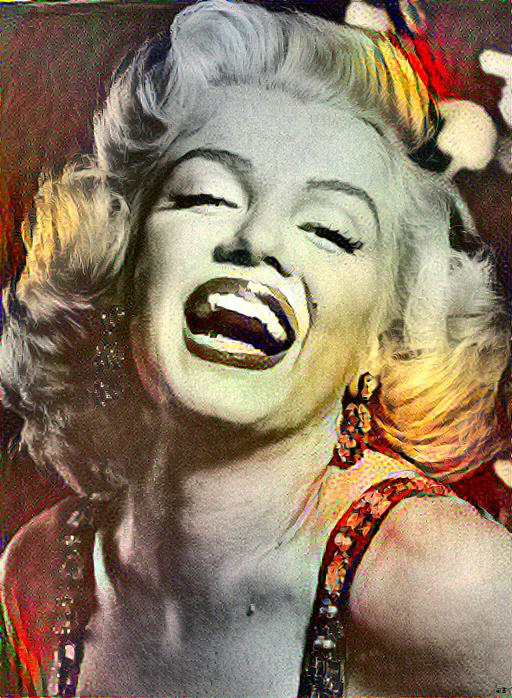
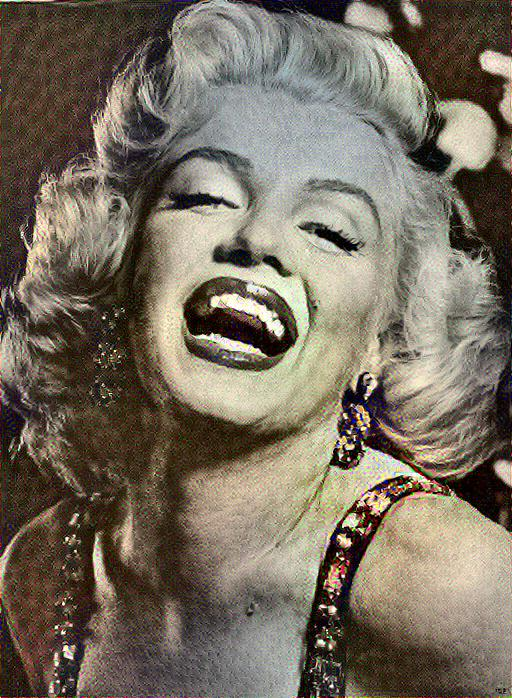
Slide to change the ratio of content weight to style weight (alpha/beta)